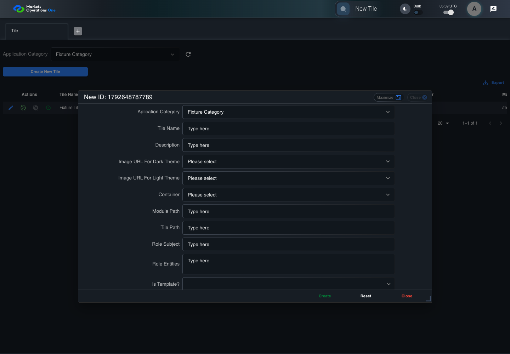

UI-ADM-TIL-002 actual administration UI with step evidence
PASS · application/run-050/ui-adm-til-002-actual-administration-ui-with-step-evidence-d6ca7c933d07-attempt-1 · ACTUAL_APPLICATION_LOCAL_SERVICES
Actual current React administration screens. Controlled browser login supplies UI-ADMIN-01 and TEST_OWNER, or the declared SUPER_USER. Controlled BFF routes return the case-declared records. Other controlled saves persist submitted field values. This run establishes frontend handling only. It does not execute BFF validation, storage, audit generation, or authorization.
2026-10-22T05:59:44.617Z to 2026-10-22T05:59:49.919Z
Assertions and result · Artifact manifest · Exact run inputs and source hashes
Result SHA-256:28ec4736e57f0dd8b53c96bffd76ec7e87c9c2a075318ab680defbfc69799461Machine observations
- new-record-source-identity.json
1a29f273ff6f20302f84d454ed52ad2f75f29a59846e8b2dbe096394f228591d - ui-origin-admin-requests.json
80c14e0e6a2f0b31a400aa7fc59ed0e9e7f961b4f378fe68c4d05dfaf3ecfd6a
Screenshot capture: CAPTURED. Named frames: 11.
Step screenshot bindings: COMPLETE. 10/10 canonical steps have execution screenshots.
Bindings measure structural coverage only. They do not establish screenshot content quality or relevance.
Screenshot content review: NOT_REVIEWED. Recorded context: 0/11 frames. Identical image bytes: 0 repeated frames. Recorded context does not establish human visual review.
Canonical step timeline
Given Admin A is authenticated as fixture UI-ADMIN-01 with the case-specific permissions
Execution: PASSED.
1. step-01 Visible state after step 1: Given Admin A is authenticated as fixture UI-ADMIN-01 with the case-specific permissions
2026-10-22T05:59:46.492Z · 1440×1000
Step: /Users/lushevol/code/github/ratan-release-impact/workbench/tasks/ui-test-coverage-20261022/test-cases.md:8647
SHA-256:f9a6f2cf7e83886ad746206b1b6d5e5ed47cd30f72b95c8a67ed580d6facacd2And the Tile admin screen is open for UI-ADMIN-01; fixture record 101 is inactive and has Tile Name Fixture Tile; its owner is TEST_OWNER; Application Category Fixture Category is selected
Execution: PASSED.
2. step-02 Visible state after step 2: And the Tile admin screen is open for UI-ADMIN-01; fixture record 101 is inactive and has Tile Name Fixture Tile; its owner is TEST_OWNER; Application Category Fixture Category is selected
2026-10-22T05:59:47.761Z · 1440×1000
Step: /Users/lushevol/code/github/ratan-release-impact/workbench/tasks/ui-test-coverage-20261022/test-cases.md:8648
SHA-256:6caf4b878c70037ebcfe26b5b7d05b8934549804f2b2be83a9e833bfc3faaa65When Admin A clicks button named "Create New Tile" inside the "Tile" administration tabpanel
Execution: PASSED.3. step-03 Visible state after step 3: When Admin A clicks button named "Create New Tile" inside the "Tile" administration tabpanel
2026-10-22T05:59:48.185Z · 1440×1000
Step: /Users/lushevol/code/github/ratan-release-impact/workbench/tasks/ui-test-coverage-20261022/test-cases.md:8649
SHA-256:e8693255be1ddd0969c35617782a0f128ccf735032d6f6e9d6fb0fc302a50ad3Then dialog with source identity "new ID: <captured fixture timestamp>" inside the "Tile" administration tabpanel is visible
Execution: PASSED.4. step-04 Visible state after step 4: Then dialog with source identity "new ID: <captured fixture timestamp>" inside the "Tile" administration tabpanel is visible
2026-10-22T05:59:48.338Z · 1440×1000
Step: /Users/lushevol/code/github/ratan-release-impact/workbench/tasks/ui-test-coverage-20261022/test-cases.md:8650
SHA-256:1070492b9bf8d72251875bee282fdbeba7ac3fb9f624cc6a370f4a208179e20bAnd button named "Create" inside the new-record dialog inside the "Tile" administration tabpanel is visible
Execution: PASSED.
5. step-05 Visible state after step 5: And button named "Create" inside the new-record dialog inside the "Tile" administration tabpanel is visible
2026-10-22T05:59:48.457Z · 1440×1000
Step: /Users/lushevol/code/github/ratan-release-impact/workbench/tasks/ui-test-coverage-20261022/test-cases.md:8651
SHA-256:144b4610b5fbd865546c327da2dfc04bb54b48faec2cfd428719806f4be008f4And button named "Reset" inside the new-record dialog inside the "Tile" administration tabpanel is visible
Execution: PASSED.6. step-06 Visible state after step 6: And button named "Reset" inside the new-record dialog inside the "Tile" administration tabpanel is visible
2026-10-22T05:59:48.580Z · 1440×1000
Step: /Users/lushevol/code/github/ratan-release-impact/workbench/tasks/ui-test-coverage-20261022/test-cases.md:8652
SHA-256:9d299d6d5f353c59c2186076d8078f7f4d811f5f5591cf5b4601d184dcee73e0And button named "Close" inside the new-record dialog inside the "Tile" administration tabpanel is visible
Execution: PASSED.7. step-07 Visible state after step 7: And button named "Close" inside the new-record dialog inside the "Tile" administration tabpanel is visible
2026-10-22T05:59:48.672Z · 1440×1000
Step: /Users/lushevol/code/github/ratan-release-impact/workbench/tasks/ui-test-coverage-20261022/test-cases.md:8653
SHA-256:2f9e48c81b626f9e61524f257b6b452b827341c019d5a406ab0f0e8262775d29And textbox named "Verified?" inside the new-record dialog inside the "Tile" administration tabpanel has value "false"
Execution: PASSED.8. step-08 Visible state after step 8: And textbox named "Verified?" inside the new-record dialog inside the "Tile" administration tabpanel has value "false"
2026-10-22T05:59:48.798Z · 1440×1000
Step: /Users/lushevol/code/github/ratan-release-impact/workbench/tasks/ui-test-coverage-20261022/test-cases.md:8654
SHA-256:1e9cf59b695b63f3487fe7234ad0f301100e6357d8ed9d81964850653732cf2dAnd textbox named "Created By" inside the new-record dialog inside the "Tile" administration tabpanel has value "UI-ADMIN-01"
Execution: PASSED.9. step-09 Visible state after step 9: And textbox named "Created By" inside the new-record dialog inside the "Tile" administration tabpanel has value "UI-ADMIN-01"
2026-10-22T05:59:48.888Z · 1440×1000
Step: /Users/lushevol/code/github/ratan-release-impact/workbench/tasks/ui-test-coverage-20261022/test-cases.md:8655
SHA-256:9d602035ff06621ffd280641373b91485733a6a45b673bf8ac60806f8b08f40fAnd textbox named "Updated By" inside the new-record dialog inside the "Tile" administration tabpanel has value "UI-ADMIN-01"
Execution: PASSED.10. step-10 Visible state after step 10: And textbox named "Updated By" inside the new-record dialog inside the "Tile" administration tabpanel has value "UI-ADMIN-01"
2026-10-22T05:59:48.969Z · 1440×1000
Step: /Users/lushevol/code/github/ratan-release-impact/workbench/tasks/ui-test-coverage-20261022/test-cases.md:8656
SHA-256:18e07f36a09c4813b708dc676ac473d3ca53a02c550e962c3e9fbb1645eebbba
Additional named frames
The final visible state after the named test assertions.
2026-10-22T05:59:49.148Z · 1440×1000Step: Test source: /Users/lushevol/code/github/ratan-release-impact/workbench/e2e/audit-specs/admin-expanded.spec.ts:15
SHA-256:
d42cab8a5bc60393148cf5cc584018558d180e79cbf267f9533ceec33b5bb4ddScreenshots establish visible state only. Assertions and traces support functional claims.